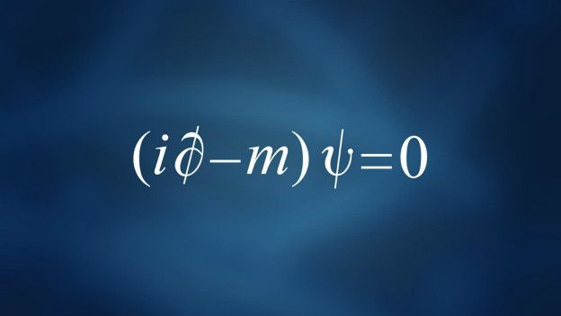
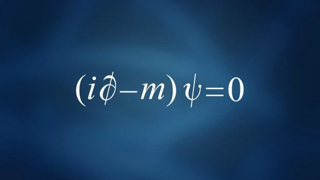
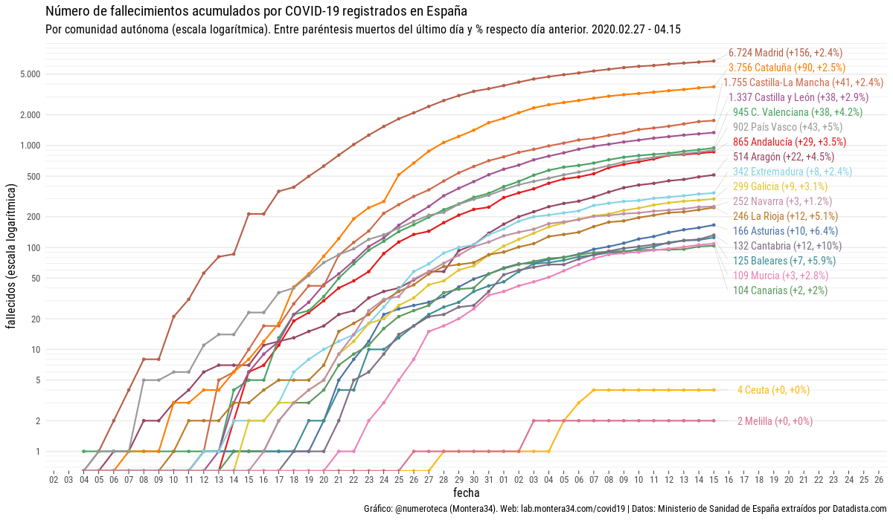

| HOME | IMÁGENES | ENLACES | ¿?S |
|---|
ME GUSTAN LAS MATEMÁTICAS |
------------------------------> |
|---|
~Para los que disfrutan con la ciencia y sobretodo con las Matemáticas

Menú
Ramas de las matemáticas
Las matemáticas o la matemática es una ciencia formal que, partiendo de axiomas y siguiendo el razonamiento lógico, estudia las propiedades y relaciones entre entidades abstractas como números, figuras geométricas, iconos, glifos, o símbolos en general. Las principales ramas son:
Aritmética: Es la rama que estudia los números y las situaciones modeladas por ellos. Su nombre proveniente de arithmos, significa habilidad con los números.
Álgebra: Es la rama que estudia las cantidades generales, es decir, es una ampliación considerable a los estudios realizados por la aritmética, basado en ella. Es considerada una de las ramas esenciales y más importantes de la matemática
Geometría plana y del espacio: Es la rama que estudia las figuras y sus propiedades, basado en las mediciones, y caracterizaciones de su partes a través de la construcción. También procede en un orden estricto a base de demostraciones de todas las propiedades. Y tiene una estructura piramidal
Geometría analítica: Es la rama que estudia las curvas y sus propiedades a través de su caracterización algebraica correspondiente en un plano o espacio cartesiano (u otros).
Lógica: Es la rama que estudia los valores de verdad de situaciones y sus equivalencias. En general estudia las formas validas de inferencia. Es la que entrega la base para el pensamiento matemático.
Probabilidad: Es la rama que estudia «el orden del azar», busca de cierta manera expresar de forma numérica las posibilidades de ocurrencia de un evento en que está envuelto el azar. También estudia sus propiedades y complementa con teoría de conjuntos.
Estadística: Muchos consideran la probabilidad y estadística como una sola rama, pero la estadística es una rama por si misma y estudia la recolección, análisis e interpretación de datos.
Cálculo: Es la rama que estudia las funciones y las consecuencias de los cambios en ellas
Conjuntos: Hay quienes no lo consideran una rama, es más hay quienes se atreven a decir que son innecesarios, pero conjuntos no solo es una base pequeña para la aritmética sino que concluye en situaciones tan complejas como las estructuras algebraicas.
Matemáticas aplicadas: Por último las matemáticas aplicadas como un resumen de las demás ramas, pero que hace referencia a todos los métodos y herramientas matemáticas que pueden ser utilizados en el análisis o solución de problemas pertenecientes al área de las ciencias aplicadas o sociales.
Números
Un número, en ciencia, es una abstracción que representa una cantidad o una magnitud. En matemáticas un número puede representar una cantidad métrica o más generalmente un elemento de un sistema numérico o un número ordinal que representará una posición dentro de un orden de una serie determinada. Los números se pueden clasificar en distintos grupos (complejos, reales, racionales, irracionales, enteros, negativos o naturales) y aunque todas son de igual importancia se suelen destacar mayoritariamente algunos números irracionales gracias a su “belleza”, algunos de estos números son π, φ o e.
π (pi) es la relación entre la longitud de una circunferencia y su diámetro en geometría euclidiana. Es un número irracional y una de las constantes matemáticas más importantes. Se emplea frecuentemente en matemáticas, física e ingeniería. El valor numérico de π, truncado a sus primeras cifras, es 3.14159265358979323846...
A e se lo suele llamar el número de Euler por Leonhard Euler,es la base de los logaritmos naturales (inventados por John Napier) y se usa por ejemplo en préstamos e inversiones, a la hora de colgar tendidos eléctricos o cables colgados por dos extremos o para descubrir la antigüedad de algo gracias al carbono 14.
Φ, el número áureo o proporción dorada, posee muchas propiedades matemáticas interesantes y se encuentra detrás de muchas de las proporciones geométricas presentes en la naturaleza y el arte.
Aunque también hay otros números muy especiales que no son irracionales, como el 0 o i. Y finalmente la ecuación denominada la más bonita (aunque compite con la ecuación de Dirac), la identidad de Euler que consigue relacionar los 5 números más destacados (0, 1, i, π, y e). LA identidad se expresa mediante la ecuación e^ (iπ) +1 =0
 

Matemáticos más importantes
- Leonhard Euler:
Es considerado el matemático más grande de la historia por introducir la notación matemática y el concepto de función. Además resolvió el problema de los Siete Puentes de Koenigsberg. Durante su vida probó varios teoremas y desarrolló el calculo, la topología y la teoría de los números. La matemática no es la ciencia más popular pero sin dudas ayuda a comprender cuestiones fundamentales de la vida. Estos matemáticos han hecho descubrimientos que ayudan a la concreción de nuevas tecnologías y maquinarias que facilitan nuestra vida. - Carl Friedrich Gauss:
Desde joven hizo grandes descubrimientos matemáticos escribiendo su primer obra a los 21 años. Antes de los 24 introdujo la constante gravitacional gaussiana, transformándose en uno de los genios matemáticos de la historia. - Bernhard Riemann:
Si bien es conocido por varios teoremas que llevan su nombre, el más famoso es la Hipótesis de Riemann, un problema sobre la distribución de los números primos. Probar esta hipótesis se ha vuelto una de las metas de la matemática moderna. - Euclides:
Vivió alrededor del 300 AC y es considerado el padre de la geometría. Algunos de sus trabajos se perdieron, pero los teoremas que probó se siguen utilizando hasta el día de hoy. Además, la geometría actual está basada en sus cálculos. - René Descartes:
Conocido por su frase “Cogito Ergo Sum” (Pienso, luego existo), fue un filósofo, físico y matemático francés. Desarrolló la geometría cartesiana y su uso del álgebra. Previamente en la geometría las distancias tenían que medirse literalmente. Con la introducción de la geometría cartesiana los puntos podían medirse en una gráfica escala, y ya no era necesario que fueran números específicamente. - Alan Turing:
Es una de las grandes mentes del siglo XX, que durante la Segunda Guerra Mundial trabajó para el gobierno en Gran Bretaña. Este científico estudió los códigos alemanes y logró descifrarlos. Luego de que la guerra terminó se dedicó a la computación, siendo pionero en este campo. Creó el test Turing que todavía se utiliza para evaluar la inteligencia de las computadoras. - Leonardo Pisano Blgollo:
Vivió desde el 1170 al 1250 y es conocido por introducir la serie Fibonacci en el occidente. Además contribuyó en la introducción del sistema numérico arábigo. Al darse cuenta que este sistema era más simple y eficiente que el romano, se dedicó a transmitirlo y fue conocido como uno de los más grandes matemáticos. - Isaac Newton:
Se dice que Newton es el inventor del cálculo debido a su obra Principia Mathematica, pero aveces se le da el crédito a Leibniz, por su contribución a la topología y la creación de la notación estándar moderna. El libro de Sir Isaac Newton, Principios Matemáticos de la Filosofía Natural, se convirtió en el catalizador para la comprensión de la mecánica. También es la persona acreditada por el desarrollo del teorema binomial. - Wilhelm Leibniz:
Se dice que Newton es el inventor del calculo debido a su obra Principia Mathematica, pero aveces se le da el crédito a Leibniz, por su contribución a la topología y la creación de la notación estándar moderna. - Pitágoras de Samos:
Es uno de los grandes matemáticos de la Grecia moderna que vivió del 570 a 495 AC. Es conocido por haber creado el teorema de Pitágoras y la trigonometría. Al día de hoy todavía es una base importante en las mediciones y los equipamientos tecnológicos. Es por esto que se lo llama el padre de las matemáticas. - Olinto de Pretto:
Fue un industrial y matemático de Venecua que posiblemente descubrió la ecuación de E=mc^2. - Arquímides:
Arquímedes proporcionó principios y métodos usados en matemáticas hoy en día. Entre ellos el valor numérico exacto de pi, el desarrollo de un sistema para que se expresaran grandes números y el método de agotamiento. Inventó la Ley de la Palanca Principio de Arquímedes: Todo cuerpo sumergido en un fluido experimenta un empuje vertical y hacia arriba igual al peso de fluido desalojado. - John Forbes Nash:
Economista, Premio Nobel de economía en 1994 por sus aportaciones a la teoría de juegos y los procesos de negociación. El trabajo del matemático estadounidense John Nash incluye estudios en geometría diferencial, teoría de juegos y ecuaciones diferenciales parciales. Es más conocido por el Teorema de incrustación de Nash. Su trabajo en geometría algebraica también se considera un hito en matemáticas. - Blaise Pascal:
Pascal es reconocido por dos áreas matemáticas de estudio, geometría proyectiva y teoría de la probabilidad. Blaise Pascal inventó la primera calculadora. Comprobó que la presión atmosférica disminuye a medida que aumenta la altura. Triangulo de Pascal: Arreglo triangular de los coeficientes binomiales en un triángulo.
Fractales
Un fractal es un objeto geométrico cuya estructura básica, fragmentada o aparentemente irregular, se repite a diferentes escalas. El término fue propuesto por el matemático Benoît Mandelbrot en 1975 y deriva del latín fractus, que significa quebrado o fracturado. Muchas estructuras naturales son de tipo fractal. La propiedad matemática clave de un objeto genuinamente fractal es que su dimensión métrica fractal es un número racional mayor a su dimensión topológica. Si bien el término "fractal" es reciente, los objetos hoy denominados fractales eran bien conocidos en matemáticas desde principios del siglo XX. Las maneras más comunes de determinar lo que hoy denominamos dimensión fractal fueron establecidas a principios del siglo xx en el ámbito de la teoría de la medida.
Los conjuntos de Julia, así llamados por el matemático Gaston Julia, son una familia de conjuntos fractales que se obtienen al estudiar el comportamiento de los números complejos al ser iterados por una función holomorfa. El conjunto de Julia de una función holomorfa f, está constituido por aquellos puntos que bajo la iteración deftienen un comportamiento 'caótico'. El conjunto se denota J(f) Benoît Mandelbrot consiguió crear su propia ecuación que combinaba todo el conjunto de Julia en una sola imagen. Cuando Mandelbrot iteró su ecuación consiguió su propio conjunto de números, que dibujados en el ordenador era como un mapa de carreteras de todo el conjunto de Julia y esta imagen se convirtió en el emblema de la geometría fractal. La ecuación es:


Ejemplos de las matemáticas en la vida real
Se dice que las matemáticas son el arte de la pura razón. Es la estructura de todo lo que existe y lo que no, en nuestra realidad. Más allá de los cálculos que nos permiten manejar nuestras cuentas y los problemas de cada día, las matemáticas también nos ayudan a comprender todo lo que podamos imaginar. Aquí hay varios ejemplos de las matemáticas en la vida real:
Motores de búsqueda y ordenadores:
Algoritmos son utilizados todos los días por las principales compañías de motores de búsqueda para ayudar a refinar las búsquedas de la persona que hay detrás del teclado. Los algoritmos son cálculos utilizados para compilar una gran cantidad de datos y variables en una ecuación, mostrando la mejor respuesta posible. Estos algoritmos son los que hacen que los motores de búsqueda sean tan expertos en encontrar rápidamente la respuesta precisa. Toman en cuenta variables como la ubicación geográfica del usuario, el historial web y la utilidad de otros usuarios que han encontrado páginas web similares para crear un resultado de búsqueda adecuado. Todas estas variables se utilizan para definir las reglas y restricciones de las ecuaciones de cálculo secuencial que producen los resultados más lógicos y efectivos.
Pronósticos meteorólogos:
Actualmente, el clima se predice con mayor precisión que nunca. Parte de la mejora es gracias a la tecnología, como el modelado por computadora que utiliza el cálculo y es capaz de predecir con mayor meticulosidad el clima futuro. Estos programas también usan algoritmos para ayudar a asignar posibles resultados climáticos en una región. Al igual que en los algoritmos informáticos, los pronósticos meteorológicos se determinan considerando muchas variables, como la velocidad del viento, el nivel de humedad y la temperatura. Aunque los ordenadores hacen el trabajo pesado de filtrar grandes cantidades de datos, los conceptos básicos de la meteorología se basan en ecuaciones diferenciales, lo que ayuda a los meteorólogos a determinar cómo los cambios en las temperaturas y presiones en la atmósfera pueden indicar cambios en el clima.
Mejora de la salud pública:
El campo de la epidemiología, el estudio de la propagación de enfermedades infecciosas, se basa en gran medida en el cálculo. Tales cálculos deben tener en cuenta tres factores principales: las personas que son susceptibles a una enfermedad, las personas infectadas con la enfermedad y las que ya se han recuperado de ella. Con estas tres variables, el cálculo se puede usar para determinar qué tan lejos y a qué velocidad se está propagando una enfermedad, dónde se originó y cómo tratarla mejor. El cálculo es especialmente importante en casos como este porque las tasas de infección y recuperación cambian con el tiempo, por lo que las ecuaciones deben ser lo suficientemente dinámicas para responder a los nuevos modelos que evolucionan cada día. Un ejemplo actual, es como esto se utiliza con el Covid-19:
(Abrir foto en otra pestaña si no se ve bien)
Arquitectura:
El cálculo se utiliza para mejorar la arquitectura no solo de los edificios sino también de infraestructuras importantes, como puentes. Los puentes son construcciones muy complejas ya que tienen que ser capaces de soportar cantidades variables de peso en grandes espacios. Al diseñar un puente, se deben tener en cuenta factores como el peso, los factores ambientales y la distancia. Debido a esto, las matemáticas como el cálculo diferencial y el cálculo integral se utilizan a menudo para crear el diseño más robusto.


Música:
Las matemáticas están frecuentemente presentes en la música, aunque no nos demos cuenta. Un ejemplo son los Ritmos Euclidianos, ritmos que se basan en el algoritmo de Euclides explicado en el apartado de algoritmos. Algunos de ritmos Euclidianos más famosos son el E(8,3) que aparece en muchísimas canciones como por ejemplo Ed Sheeran – “Shape of You” , “Cheap Thrills “– Sia o “Despacito” – Luis Fonsi y muchas más, otro, por ejemplo es el E(5,2) que aparece en la 6º sinfonía de Tchaikovsky o el E(7,3) que aparece en Money de Pink Floyd.